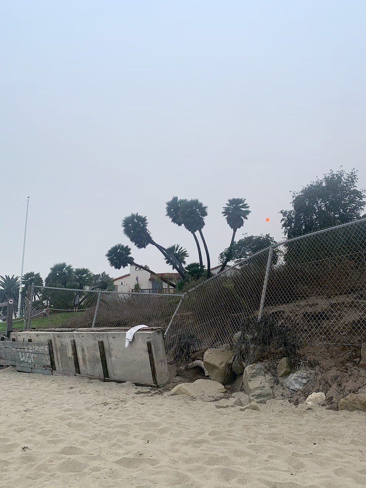

Assignment I - Editing Images
Back to homepage.
Below are some images I have edited for Journalism Design Toolkit Fall 2020 with Professor Jason Das.
This assignment consisted of changing image sizes and resolutions, as well as file types.
All of the photo edits below were done with Photoshop. In each photo description below, the keywords of assignment's prompt are in quotation marks.

The above image was created under a "creative," edit prompt. Taking a portrait I used for a different part of this assignment, I multiplied the subject on a nearly diagonal slant, gradating in size. The background of the entire image is of the sea, replacing the foreground at the horizon line. A triangular smooth-sand texture breeches the image, aligning itself with the diagonal pathway of the image's subject.

The above triptych was created as a "banner" for this assignment. The first photograph features an anemone I examined at El Matador State Beach for a Marine Biology class at the beginning of the pandemic summer. The second image is from a windy Santa Cruz summer day in 2019. The third photograph is the end of the 710 South, my regular freeway exit, on a very fiery morning of September.

For the "crowd" prompt, I decided to go where there is always a crowd. Even on a flat day, at Malibu a crowded lineup in guaranteed. There is a surprisingly light amount of people for this spot captured above.

Using a shot just before the previous crowd photo, this image is used as a background for the "Journalism + Design Logo" prompt. The candy striped Catch Surf foamie in the bottom right is lightly saturated to compliment the logo's color. The slightly more muted pink of the bottom right subject's hat and the corner of the umbrella are also subtle bouts of color on an overcast day. The image was also cropped to feature all of the pink-colored subjects.

For the above "Overexposed Edit," I took an photograph of the Adamson House under very overcast settings, and recolored the image changing values, dodging and burning specific areas, and creating a blue gradient for an otherwise grey and smokey sky. While the results are still relatively light, the image has more definition and value to the depth of its colors. The hot-pink sun is an annual feature of fire season in California.

The above "Underexposed Edit" was originally a very dark image taken in Altadena, California, a mountain over from the Bobcat Fire in the San Gabriel Mountains. The original image appeared almost as if it was capturing a sunset, so the fire conditions were ideal for capturing an underexposed image. Changing the colors and definition on Photoshop greatly illuminated the scene of this photo that was hardly distinguishable in its previous versions. I lassoed the various groups of greenery to flesh them out of the otherwise flat background. After brightening the image, I re-added the original color of the sun, which turned to a lighter pink with the rest of the image. I found editing the back mountain-scape difficult, which could still benefit from being a few shades darker, for a more crisp contrast. The detailed contour of the trees in front of the mountain were challenging to go around when darkening the mountain, hence the lighter contour distinguishing the trees from the mountains in the background. While the image overall is much brighter, because it was so dark in its initial form, the quality of its resolution is not ideal.